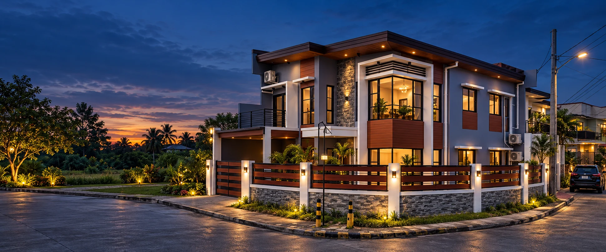
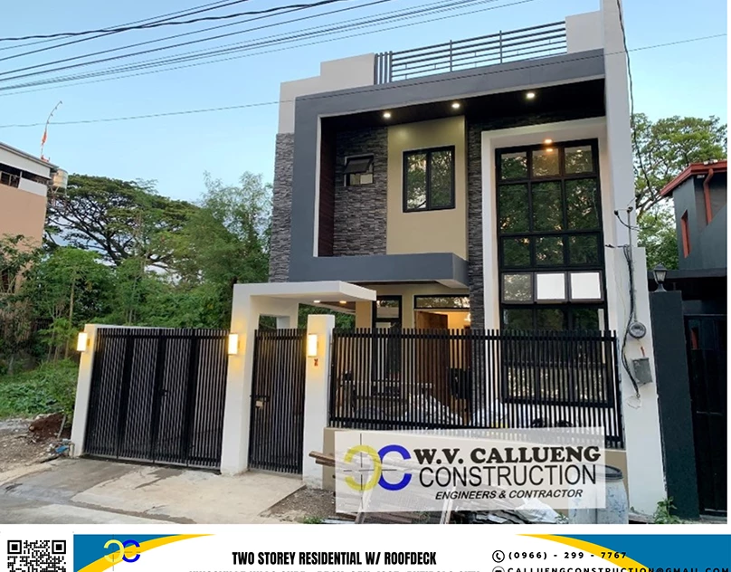

Exterior

Design & buildA better build
A better build
begins here.
Design, permits, and construction, with a clear plan from your first idea to the final handover.
Hero: AI concept interpretation. See the published project.
Your design studio
What are you imagining?
Find a feeling. Explore both sides of home. Bring a shared direction to your first meeting.
Make it yours
Likes, dislikes, and everyday needs. Keep personal details out of this demo.
Modern tropical
Warm materials, shaded openings, and a connection to greenery.
AI concept examples. This prototype shows prepared style references; custom ideas and colours are recorded in your brief.
AI concept reference
Your direction, inside and out.
Save both, or mix a favourite exterior with another interior.
Interior · living & dining
Modern tropical
Your meeting shortlist
Choose the views you like to begin your shortlist.
Choices stay in this browser tab. Nothing is sent.
Add the place to the picture.
The team will need context as well as inspiration.
Less uncertainty.
More room to move forward.
A good build starts by resolving the questions that matter.
Start with the scope.
Then put numbers to it.
A floor area alone cannot tell the whole story. Site conditions, specifications, and priorities shape what the project needs.
Make assumptions visible
Capture the finish, exclusions, and information still needed.
Review before committing
Discuss drawings and measured quantities with the team.
Places built around real life.
Homes and shared spaces from the W.V. Callueng portfolio.

Published W.V. Callueng portfolio.
One considered path.
From plans to place.
Bring the decisions together before work moves forward.
Plans & design
Discuss architectural, structural, and coordinated building plans, with the professional review your project requires.
Permits & preparation
Identify the documentation and approvals that the project needs before construction.
Construction & renovation
Define the work, materials, and review points against the agreed scope.
Know what happens next.
Four connected conversations, with a clear record at each handoff.
Define the brief
Understand the site, intended use, and priorities.
Design the scope
Review plans, specifications, and assumptions.
Prepare & build
Coordinate the agreed work and review progress.
Review & hand over
Inspect the work and collect project records.
A build you can stay close to.
See the proposed client-care experience: approved updates, decisions, documents, and a conversation with your team.
Explore client care
Client-care concept
Your next decision, in context.
Review the proposed finish, its allowance, and what the team needs from you.
Interactive sample workspaceOpen preview
Come to the first meeting prepared.
Simple questions to help you talk about the right things, even if you are starting with a blank page.
Read the first meeting guideBefore you begin.
A few questions worth clearing up.
Where do I begin if I do not have plans?
Start with your intended use, location, approximate floor area, and priorities. A first discussion can establish what drawings, site information, and scope decisions are needed.
Can I get a price from the website?
The Build Brief helps prepare a scope discussion. It does not produce a company quotation. Any sample allowance is illustrative; a real estimate needs drawings, quantities, site conditions, specifications, and reviewed rates.
What if my project is a renovation?
Include what you want to keep, what needs to change, and whether the property will remain occupied. The existing structure and site need assessment before the scope is confirmed.
How are changes handled?
A proposed change should identify the revised work, price and schedule impact before approval. The prototype client-care page shows how that conversation could be recorded.
Your next chapter starts with a plan.
Bring your idea. Leave with a clearer starting point.
Plan my build